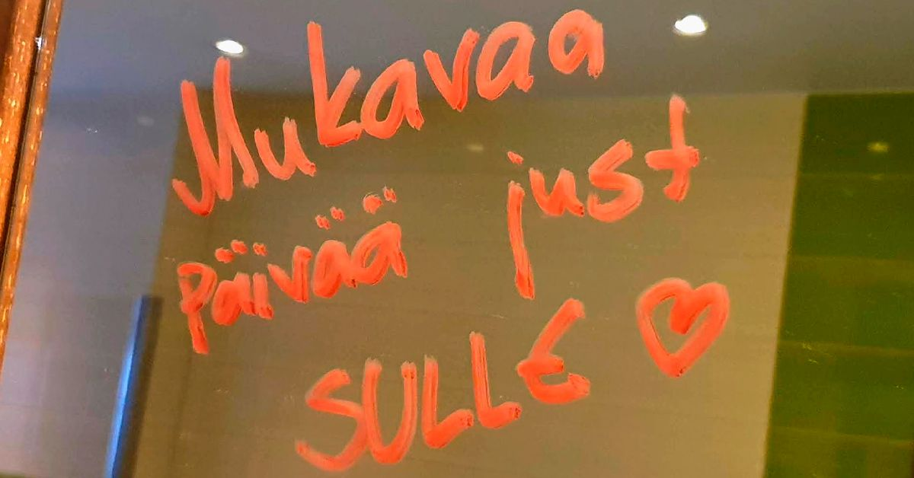
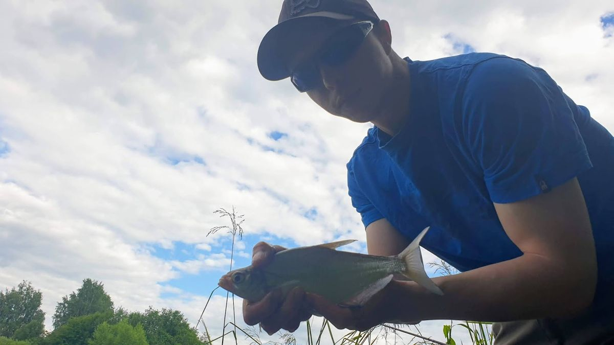
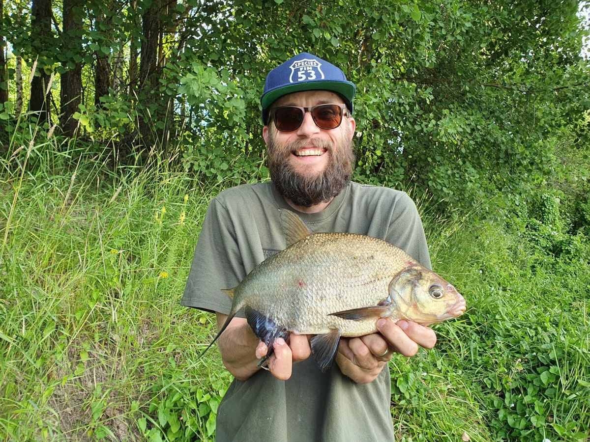
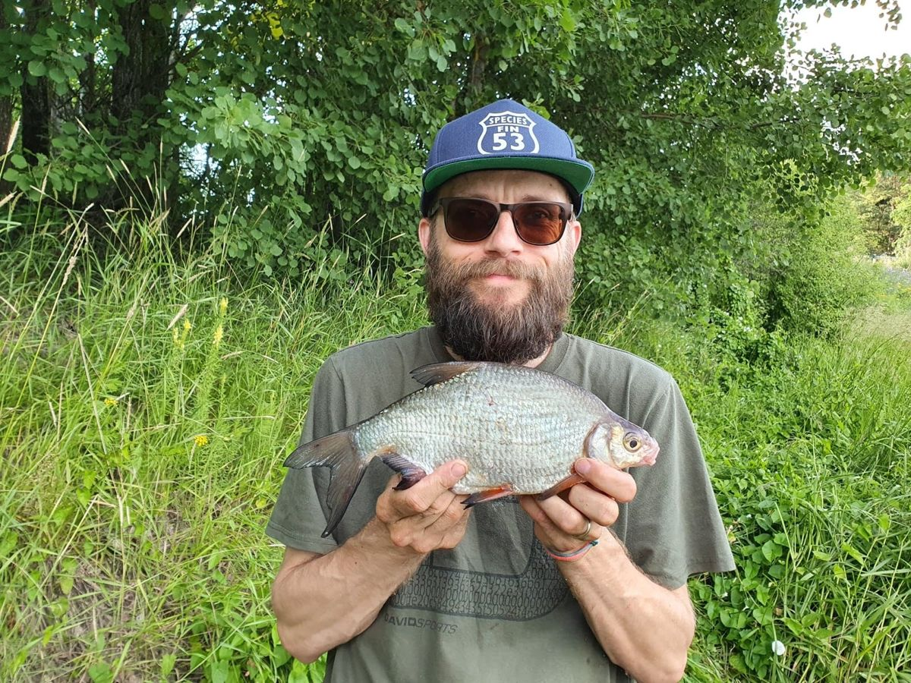

Blogitekstit · Heinäkuu 2020
Sulkavajahdissa Loimijoella


Loimijoki on merkitty monen fongarin kohdalle sulkavan saantipaikaksi. Muutama vuosi takaperin pelipaikoista Juuson kanssa juttelin ja hän silloin kertoi yhden rannan Huittisista mistä sulkavan voisi tavoittaa. Tuo paikka unohtui merkata kartalle ja tälle vuodelle sitä erityisesti tarvitsi.
Miika, Mikael, Juuso, Niko ja pari muuta fongaria olivat saaneet kesä-heinäkuun aikana lajipisteen listalleen, joten miksi en minäkin lähtisi Loimijoelle yrittämään.
Ennen reissua viestittelin muutaman kalakaverin kanssa paikasta ja lopulta selvisi, että kyseinen kohta, jota olin ajatellut ja muistellut, että tuo on se Juuson kertoma, paikka oli juuri tämä kyseinen sulkavan pyyntiranta.
Vaikka neljänkympin dementia alkaa vaivamaan oli karttakuva piirtynyt verkkokalvojen kautta jonnekin aivojen nystyröiden takapajulaan, että sieltä sen sain kaivettua esille.
Mukaan retkelle lähti ystäväni Timi.
Ennen reissua kävimme Jig.fi -kalastusvälineliikkeessä Petikossa täydentämässä mäski, syötti- ja ongintavälinevarastoa. Mukaan lähti syöteiksi matoja sekä purkki valkoisia kärpäsentoukkia. Kyseinen liike taitaa olla kesäaikaan ainoa paikka mistä saa kärpäsentoukkia pääkaupunkiseudulla.
Matka sujui leppoisasti rupatellen ja miettien mitä on vuoden aikana tapahtunut ja mitä on vielä edessä.
Vanha Porintie, kakkostie ja lopulta Huittisten ABC. Eväsvarastojen täydennys ja kohti rantaa.
Edessä aukesi Vantaanjoen kaltainen levä joki, minkä ulkokaarteeseen asetuimme ongelle. Rannan kaksi onkipaikkaa viestivät, että tässä on selvästi ongittu useasti. Timi nappasi luotauspainon ja mittaili syvyyksiä.
”Tässä rannassa on noin metri, sitten syvenee ja tuossa ongen kärjen kohdalla on jo melkein neljä metriä.”
Teimme mittauksen jälkeen mäskit. Timi laitteli siihen mitä sattui, ja hyvältä se näyttikin.
Mäskiä veteen ja onget perään. Syötiksi pieniin koon 16 koukkuihin laitoimme Saarijärvellä edellisellä yhteisellä sulkavareissulla todettuja matoja.
Hiljaista, hyvin hiljaista. Vain joen pintaa pitkin kulkevat lasten iloiset äänet kaikuivat jokilaaksossa. Kohot kulkivat virrassa ilman tikkujen pahempaa sukeltamista halki tyynen vedenpinnan.
Lopulta parin tunnin kalastamisen jälkeen nousi ensimmäinen kala, pieni pasuri nappasi puolikkaan madon suuhunsa.


Reilun tunnin kalastamisen jälkeen Timi saa napattua ensimmäisen sulkavan kuvattavaksi. Kala ei tullut madolla vaan nipulla kärpäsentoukkia, kuten miekkasärjet kesäkuussa.
Ensimmäinen minun kuvattava kala oli komean kokoinen pasuri, eikä aikaakaan, kun nousi hienoa lahna. Särkikalatrio olisi täydentänyt suuri särki, mutta oman säheltämisen takia särki sai jatkaa matkaansa kohti Loimijoen syvyyksiä.


Timi nappasi vielä toisen sulkavan ja sitä ihaillessa, liukastuin rannalla ja kaaduin suoraan selälleni saaden mojovan tällin niskaan.
Puoli yhdeksän aikaan Timi niputti täkyonkensa ja heitti viimeiset mäskit joenpohjaan. Tässäkö tämä olisi, pitäisikö se tehdä uusi 370 km ajomatka paikkoreissuna.


Pienen kärpäsentoukkapurkin pohja alkoi jo kajastaa mustana, lisäsin toukkia reilun nipun ja mietin, että nyt se napataan ja käytetään nämä viimeiset toukat. Taustalla sateenkaaren viimeiset värit hävisivät siniseen.
Sitten se tapahtui, kuten niin monta kertaa aikaisemminkin tällä vuodella että viime hetkellä nappaa se mitä on yritetty.

Timi pakkaili penkalla kamoja, kun huusin, että nyt se on siinä. Rohkeasti nostin kalan suoraan vavalla kuiville ja pääsin tuulettamaan.
Kalasta nopeat kuvat ja takaisin veteen. Kamat autoon ja kohti Loimijoen virtapaikkoja, aikaa olisi noin tuntia heitellä toutainta. Konsultointiapua tarjosi alueen paremmin tunteva Toni Ojala.
Tyhjää oli.
Toutaimen kalastus siirtyy nyt kotivesille ja Lempäälään.
Kotiin ajaessa pelloilla näkyi kauriita, kerran vastaantulija väläytti valoja. Heti seuraavassa risteyksessä kauris seisoi ja ihmetteli ohiajavia autoja, taustalla peltojen päälle alkoi nousta usva.
Lajeja on kasassa nyt 54, tätä varten piti tehdä myös uusi taulukkopohja, jossa on 60 lajille paikat.